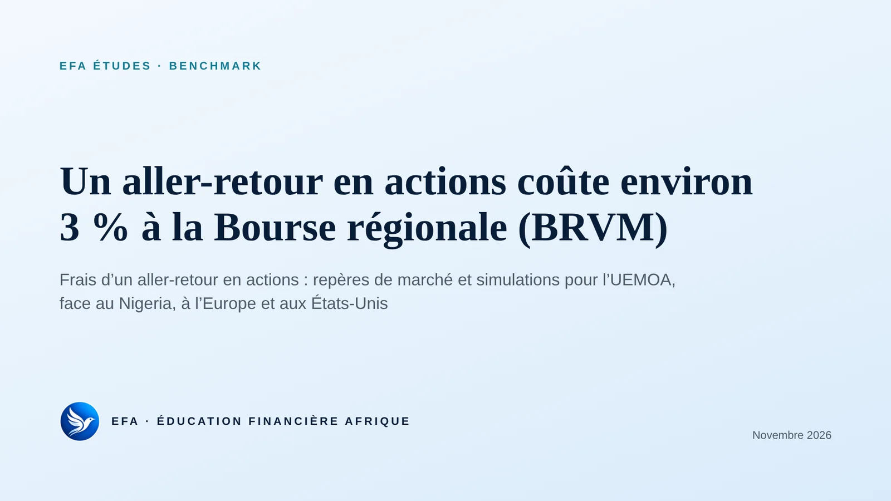
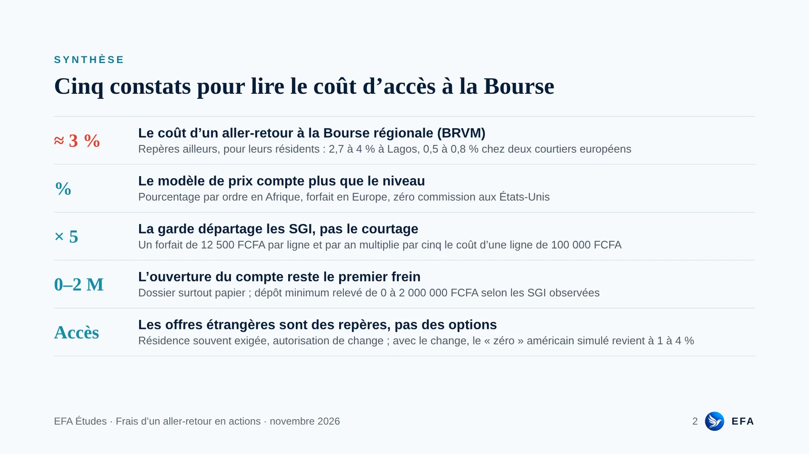
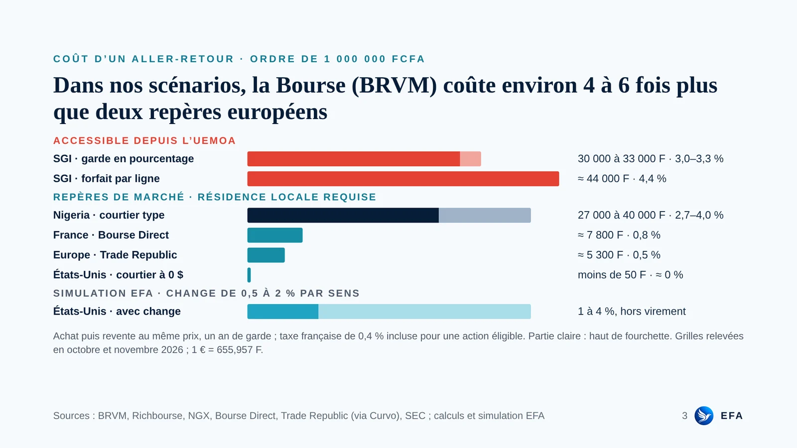
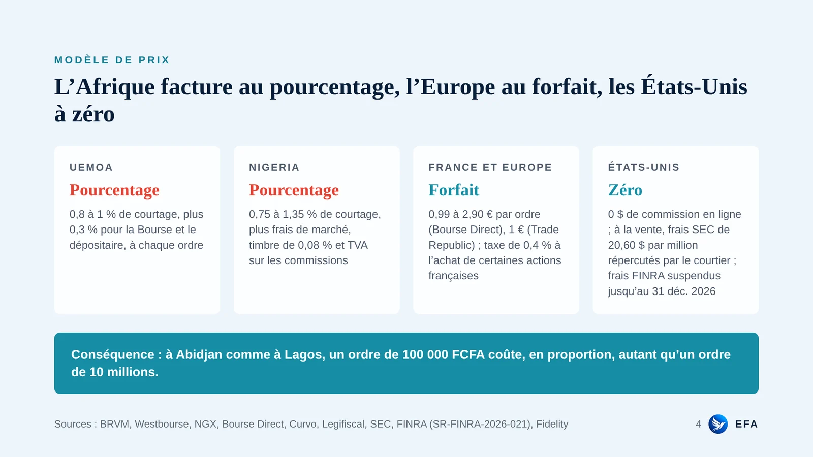
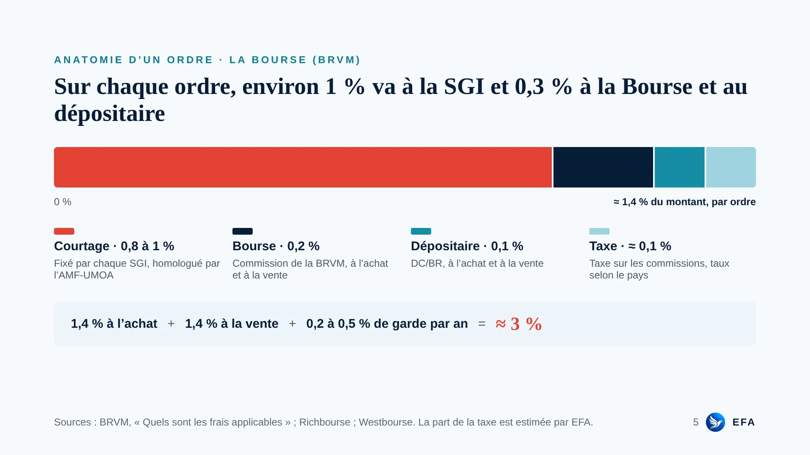
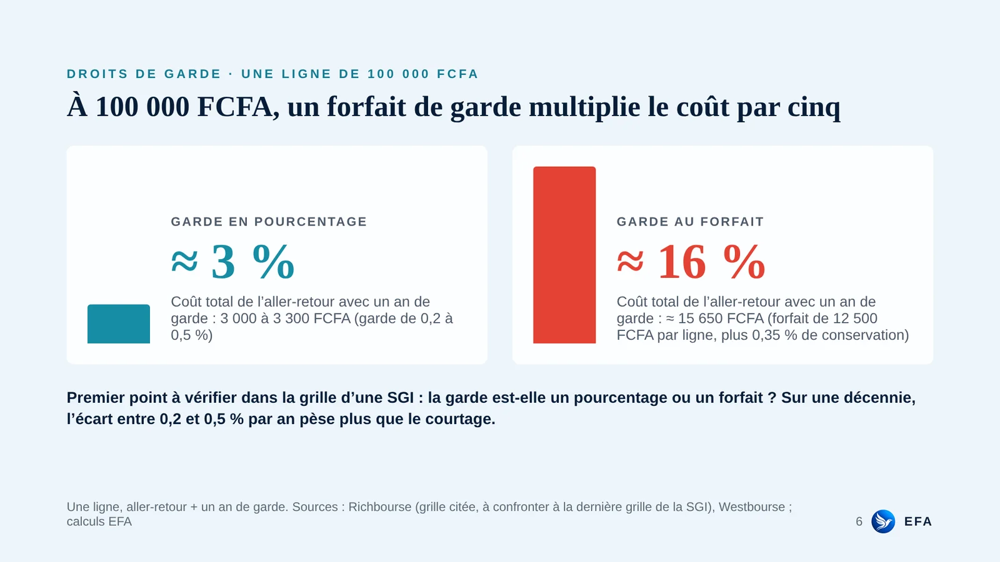
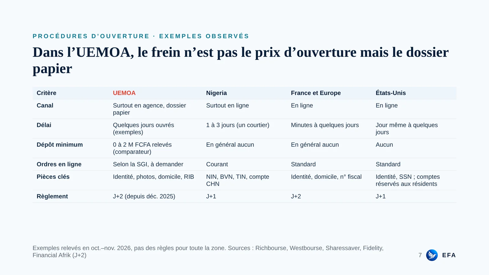
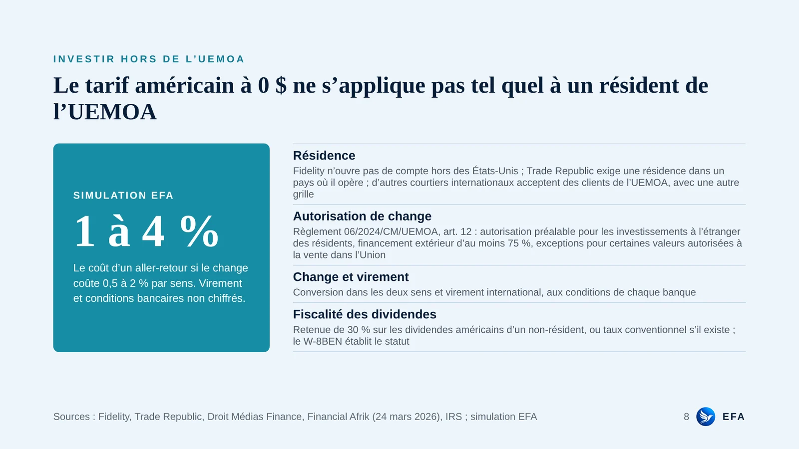
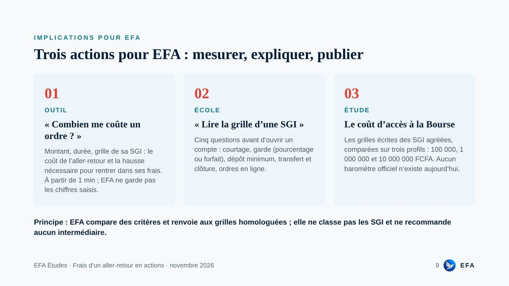
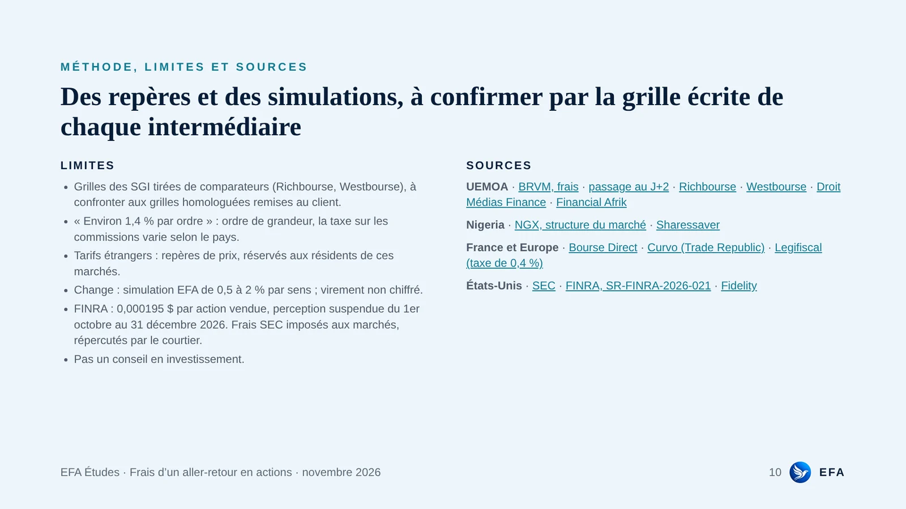

EFA Études · Benchmark · novembre 2026
Un aller-retour en actions coûte environ 3 % à la Bourse (BRVM)
Frais d’un aller-retour en actions : repères de marché et simulations pour l’UEMOA, face au Nigeria, à l’Europe et aux États-Unis. La finance avec nos réalités africaines, en dix planches.
Télécharger l’étude (PDF)Gratuit · à partir de 2 min de lecture
≈ 3 %Le coût d’un achat puis d’une revente à la Bourse (BRVM), un an de garde compris.
× 5Ce que coûte en plus une garde au forfait sur une ligne de 100 000 FCFA.
1 à 4 %Le « zéro » américain une fois le change compté, en simulation, pour un résident de l’UEMOA.
L’étude
Les dix planches










Passer à l’action
Avant d’ouvrir un compte, posez les bonnes questions à votre SGI
Garde en pourcentage ou au forfait, dépôt minimum, ordres en ligne : tout au même endroit, c’est pensé pour nous.
Les questions à poser à sa SGI →